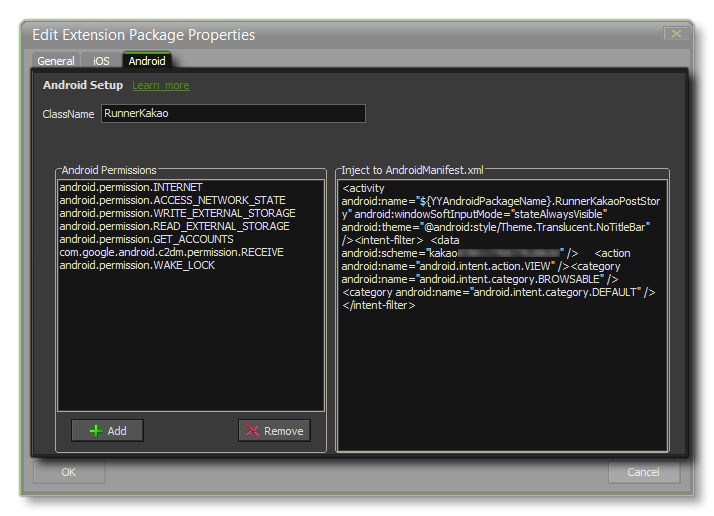

When you create a new extension for your game, you are presented with the Extension Package Properties window from where you can set the basic properties for the extension (see the page Creating Extensions for further details). If your extension is for Android, you would tick that option too, and clicking on the Next button will open the following tab:  Here you give the following details:
With that done, you will then need to add in any extra
permissions that your extension requires. What these permissions
are will depend entirely on the use that the extension has, and so
you should check the documentation supplied by Google for the
Android platform, or, if you are using a third party SDK, the
documentation that comes with the SDK.
You can also set any extra code to be injected (added) to the
Android Manifest XML file when your game is built for
testing or final release. Make sure to revise this (and your
permissions) carefully before submitting any games to the store, as
incorrect settings will cause your game to be failed for
submission.
Once you have set this up correctly, you will need to add the
required files for your extension package to work. To do this you
need to right click on the extension and select either Add
Android SDK or Add Android Source and then browse to the
files you wish to add. Added files will be stored in the
AndroidSource directory along with your extension. You can
open this location at any time by right clicking on the extension
and selecting Open Extension Directory.
To add your functions and constants to the extension package,
you must now right click on the extension again and select Add
Placeholder. This will create a placeholder file which "links"
the functions you want to add to the extension itself. Once you
have added your placeholder, you can then follow the instructions
given on the page Creating
Extensions to add the functions and constants it requires.
Don't forget to set the export targets for the functions by
right-clicking on the placeholder and selecting
properties.
You can find a more detailed explanation of the exact steps
necessary to create an Android Extension from the YoYo Games
Knowledge Base: Creating A Native Extension For Android.